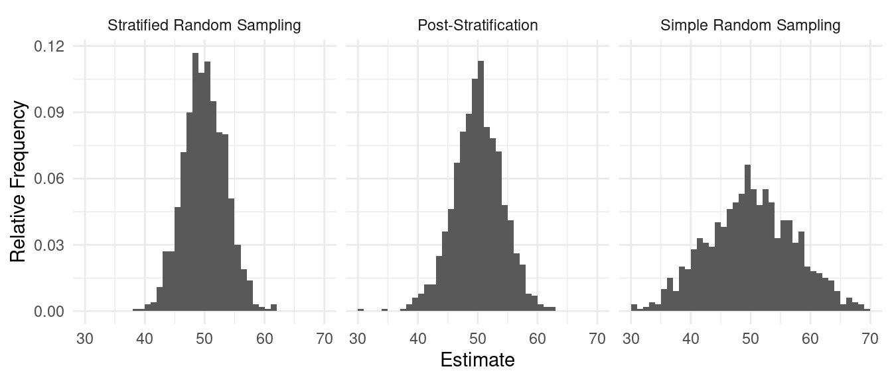

You can also download a PDF copy of this lecture.
Post-stratification is when stratification is not used in the design but is used in estimation.
Why post-stratification rather than stratified random sampling?
The estimators for \(\mu\) and \(\tau\) for post-stratification are the same as those for stratified random sampling. They are \[ \hat\mu = \frac{N_1}{N}\bar{y}_1 + \frac{N_2}{N}\bar{y}_2 + \cdots + \frac{N_L}{N}\bar{y}_L = \sum_{j=1}^L \frac{N_j}{N}\bar{y}_j, \] and \[ \hat\tau = N_1\bar{y}_1 + N_2\bar{y}_2 + \cdots + N_L\bar{y}_L = \sum_{j=1}^LN_j\bar{y}_j. \] But the variances for these estimators are not the same under post-stratification and stratified random sampling. The variance of \(\hat\mu\) when using simple random sampling with post-stratification is \[ V(\hat\mu) \approx \underbrace{\frac{1}{N^2} \sum_{j=1}^LN_j^2\left(1-\frac{n_j}{N}\right)\frac{\sigma_j^2}{n_j}}_a + \underbrace{\frac{1}{n^2}\left(\frac{N-n}{N-1}\right)\sum_{j=1}^L\left(1-\frac{N_j}{N}\right)\sigma_j^2}_b, \] where \(n_j = nN_i/N\) (proportional allocation). Recall that the variance of \(\hat\tau\) is \(V(\hat\tau) = N^2V(\hat\mu)\).
The term \(a\) is the variance of \(\hat\mu\) when using stratified random sampling with proportional allocation.
The term \(b\) is the extra variability due to random \(n_1, n_2, \dots, n_L\).
What does this imply about how stratified random sampling compares with post-stratification? And how does simple random sampling without post-stratification compare with simple random sampling with post-stratification?
Simulation results with three strata with \(n\) = 15. | Method | Variance |
|---|---|
| Stratified Random Sampling | 3.48 |
| Post-Stratification | 4.40 |
| Simple Random Sampling | 7.33 |
| Method | Variance |
|---|---|
| Stratified Random Sampling | 2.44 |
| Post-Stratification | 2.56 |
| Simple Random Sampling | 5.13 |
Recall that for a simple random sampling design, an estimator of \(\tau\) is \[ \hat\tau = \frac{N}{n}\sum_{i \in \mathcal{S}}y_i, \] which we can also write as \(\hat\tau = N\bar{y}\). We can also write this as \[ \hat\tau = \sum_{i \in \mathcal{S}} w_iy_i, \] where \(w_i = N/n\). Furthermore it can be shown that \(N = \sum_{i \in \mathcal{S}} w_i\).1 So the estimator of \(\mu\) (i.e., \(\bar{y} = \hat\mu\)) can be written as \[ \hat\mu = \frac{\sum_{i \in \mathcal{S}} w_i y_i}{\sum_{i \in \mathcal{S}}w_i}. \] Every element has a survey weight \(w_i\). More specifically, these are called design weights because they are determined by the sampling design. The design weights can be interpreted as the effective number of elements in the population “represented” by the \(i\)-th sampled element.
Example: For a simple random sampling design with a population of \(N\) = 100 elements and a sample of \(n\) = 20 elements, what are the weights for each element in the sample?
Now consider a stratified random sampling design. Here the estimator of \(\tau\) can be written as \[ \hat\tau = \hat\tau_1 + \hat\tau_2 + \cdots + \hat\tau_L, \] where \[ \hat\tau_j = \frac{N_j}{n_j}\sum_{i \in \mathcal{S}_j} y_i, \] where \(\mathcal{S}_j\) is the sample obtained using simple random sampling form the \(j\)-th stratum, so we can write \[ \hat\tau_j = \sum_{i \in \mathcal{S}_j}w_iy_i, \] where \(w_i = N_j/n_j\). So the estimator of \(\tau\) can also be written as \[ \hat\tau = \sum_{i \in \mathcal{S}} w_iy_i, \] but now where \(w_i = N_j/n_j\) if the \(i\)-th element in the \(j\)-th stratum.2 As before, we can write the estimator \(\hat\mu\) as \[ \hat\mu = \frac{\sum_{i \in \mathcal{S}}w_iy_i}{\sum_{i \in \mathcal{S}}w_i}. \]
Example: For a stratified random sampling design with two strata of sizes \(N_1\) = 200 and \(N_2\) = 100, and sample sizes of \(n_1\) = 10 and \(n_2\) = 10, what are the weights of the sampled elements?
The weights depend on the design.
For various reasons we may decide to change the weights. This is called re-weighting.
Post-stratification can be viewed as re-weighting. If we use a simple random sampling design we could use the estimator \[ \hat\tau = \sum_{i \in \mathcal{S}} w_iy_i, \] where \(w_i = N/n\). But when using post-stratification we use our knowledge of the stratification of the elements to re-weight by replacing these weights with those from a stratified random sampling design where now \(w_i = N_j/n_j\) if the \(i\)-th element is known to be within the \(j\)-th stratum.
As there are \(n\) elements in the sample, the sum of the weights, \(\sum_{i \in \mathcal{S}}\frac{N}{n}\), is equivalent to multiplying \(N/n\) by \(n\) which gives \(N\).↩︎
Another way to write this would be to use a sum within a sum as \[ \hat\tau = \sum_{j=1}^L\sum_{i \in \mathcal{S}_j} w_{ij}y_i, \] where \(w_{ij} = N_j/n_j\).↩︎